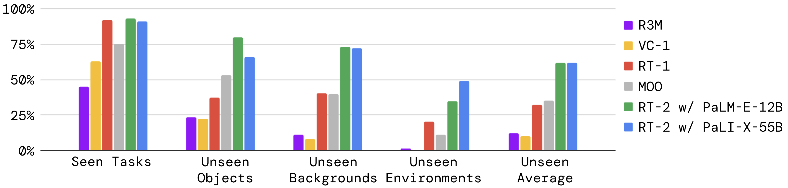
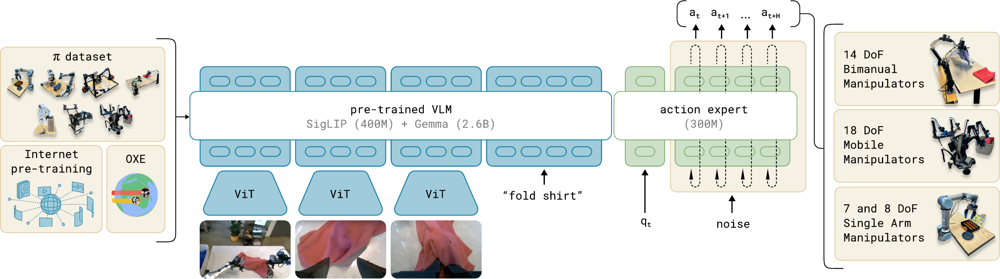
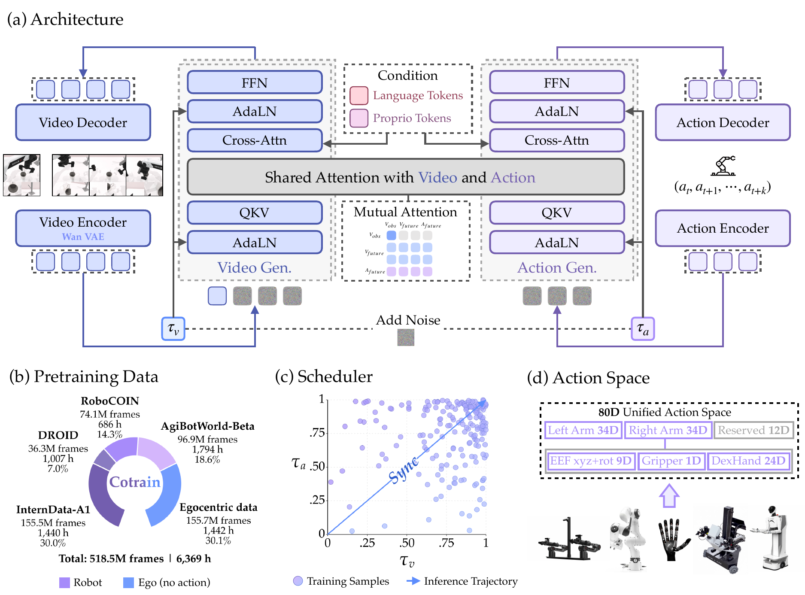

具身智能不是一条从 RT-2 线性走向某个“终局模型”的路线。当前更适合并行理解三种能力：视觉语言动作模型（VLA）负责把观测和指令映射为动作；世界—动作模型（WAM）预测动作会带来的未来；Code-as-Policy 让通用模型生成可以调用机器人 API 的程序。



1. 关键时间线
| 节点 | 年份 | 改变了什么 |
|---|---|---|
| Code as Policies | 2022 | LLM 生成 Python 策略，组合感知器、几何库和控制原语；历史上早于 RT-2。 |
| RT-1 / RT-2 | 2022–2023 | 用 Transformer 统一视觉、语言和动作；RT-2 将动作编码为 token，使互联网视觉语言知识迁移到机器人控制。 |
| π0 / FAST / π0.5 | 2024–2025 | 从连续 flow matching、动作 token 化到开放环境泛化，强调跨任务和跨本体。 |
| π*0.6 / π0.7 | 2025–2026 | RECAP 在线强化学习、行为元数据、视觉子目标与组合泛化。 |
| CaP-X / ASPIRE / PhysCaP | 2026 | 代码策略加入多轮反馈、技能库、进化搜索和主动探测。 |
| OpenWAM-α | 2026 | 以联合去噪方式同时建模视频未来和动作 chunk。 |
论文：Code as Policies、RT-2、π0。
2. RT-2 与 π：动作表示的两种选择
RT-2 把离散动作写成 token：
(image, instruction) → [action_1, action_2, …, action_T]这让动作可以与文本共同建模，优点是能利用 VLM 的语义知识；代价是动作离散化、解码频率和机器人自由度差异会影响精度。
π0 使用预训练 VLM 加连续动作专家，以 flow matching 生成 action chunk。π0.5 扩展到开放环境和异构数据；π*0.6 用 RECAP 把示范、自主执行和人类纠正接入强化学习；π0.7 进一步加入语言、速度/质量元数据、控制模式和视觉子目标。Physical Intelligence 的研究目录是版本和配套技术的主要来源。
3. Code-as-Policy：让模型写控制程序
Code as Policies 不要求语言模型直接输出所有关节信号，而是让它生成调用机器人 API 的程序：
语言目标 → LLM 生成程序 → 感知/API 调用 → IK 与伺服 → 视觉反馈VoxPoser 将语言规划连接到 3D value map，ReKep 使用关系关键点表达约束。2026 年的 CaP-X、ASPIRE 和 PhysCaP 把重点放在执行反馈、失败修复、技能复用和物理属性探索，而不是只增加提示词长度。
这条路线的优势是可解释、可组合、容易接入现有机器人软件；瓶颈是 API 误用、延迟、错误累积、接触力控制和安全验证。
Code as Policies · CaP-X / CaP-Gym · PhysCaP
4. WAM 与 OpenWAM
WAM 把“会发生什么”和“应该怎么做”放到同一模型中。OpenWAM-α 使用视频 DiT 与专用 ActionDiT，通过联合注意力和同步去噪生成未来视频与动作 chunk。官方报告约 6,400 小时、5.18 亿帧、80 维统一动作空间，并覆盖八个模拟基准和三个真实机器人平台。
(current frame, language, noisy video, noisy action)
↓ joint attention + mutual visibility
future video latents + executable actions它的关键价值是将世界模型变成动作选择的中间约束；但视频逼真不代表动作一定可执行，真实动力学和 OOD 评测仍然重要。
5. 工业界实施路径
工业界的公开路线通常把具身理解、动作生成、世界模型和部署工程组合起来。腾讯混元 HY-Embodied / HyVLA-0.5 关注 MoT 视觉推理、flow-matching 动作专家和从数据采集到 RL 的完整栈；阿里通义 Qwen-VLA 将视觉语言骨干扩展到 DiT 连续动作，并统一操作、导航和轨迹预测；字节 GR-2 代表视频预训练先验迁移到机器人控制。
小米则同时覆盖三层：MiMo-Embodied 负责具身 VLM 理解，Xiaomi-Robotics-0 负责实时 VLA，Xiaomi-Robotics-U0 负责世界生成与数据增强，Xiaomi-Robotics-1 以大规模 UMI 轨迹训练机器人基座。不同模型的结果必须绑定具体基准和日期。
HY-Embodied · Qwen-VLA · GR-2 · Xiaomi-Robotics-0 · Xiaomi-Robotics-U0 · Xiaomi-Robotics-1
6. 截至 2026-09-12 的榜单读法
“榜首”必须绑定基准、版本和日期。RoboCasa365 官方榜单在 2026-09-10 显示 Xiaomi-Robotics-1 为第一（57.4）；RoboDojo 当前榜单的第一是 DM0.5（24.90），Xiaomi-Robotics-1 约为 20.07；WorldArena 2.0 Track 1 的第一是 FlowWAM-FiveAges（67.62），Xiaomi-Robotics-U0 为 67.39。不同赛道不能合并成一个总排名。
RoboCasa365 · RoboDojo · WorldArena 2.0
7. GPT-6 Astra：通用模型进入控制环
OpenAI 官方把 GPT-6 Astra 定位为通用推理、代码和 computer use 模型，并未公开将其定义为专门 VLA。Robocurve 的第三方实验把 Astra 接到 Inspect Robots harness：输入三路摄像头和本体状态，输出双臂末端位姿，再由 IK 转成关节角。
| 任务 | Astra 结果 | 观察 |
|---|---|---|
| 方块放入碗中 | 19/20（95%） | 高层视觉闭环和位姿 API 结合得很好。 |
| 拼图插入凹槽 | 2/20（10%） | 精细接触、力控制和最后一步对齐仍然困难。 |
因此 Astra 更适合归入“通用多模态模型 + 机器人 API + 反馈”的 Code-as-Policy Agent，而不是端到端 VLA。X（Twitter）和小红书上的演示可以帮助发现新现象，但只有同时公开硬件、接口、提示词、失败率和测试协议时，才应作为定量证据使用。
OpenAI GPT-6 Astra · Robocurve Astra evaluation
Coding Is All You Need? Why We Need a World Model!
代码策略擅长把语言目标编译成可调用机器人 API 的程序，但程序本身不会预测接触、遮挡和物体形变。视频世界模型通过预测动作造成的未来，为策略提供结果预览和可执行性检查。
Cosmos · DreamDojo · DreamZero · RoboWM-Bench
8. 一句话比较
- VLA：重点是“从看见和理解直接生成动作”。
- WAM：重点是“预测动作造成的未来，并用未来约束动作”。
- Code-as-Policy：重点是“让模型生成、执行和修复可检查的控制程序”。